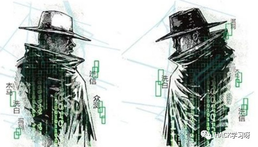
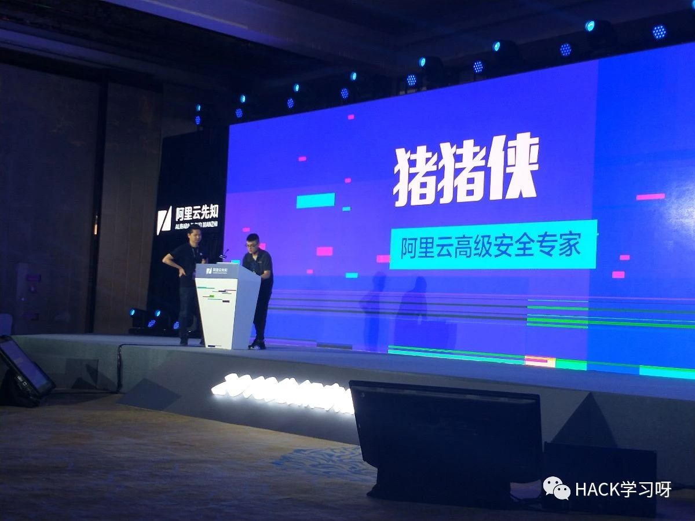
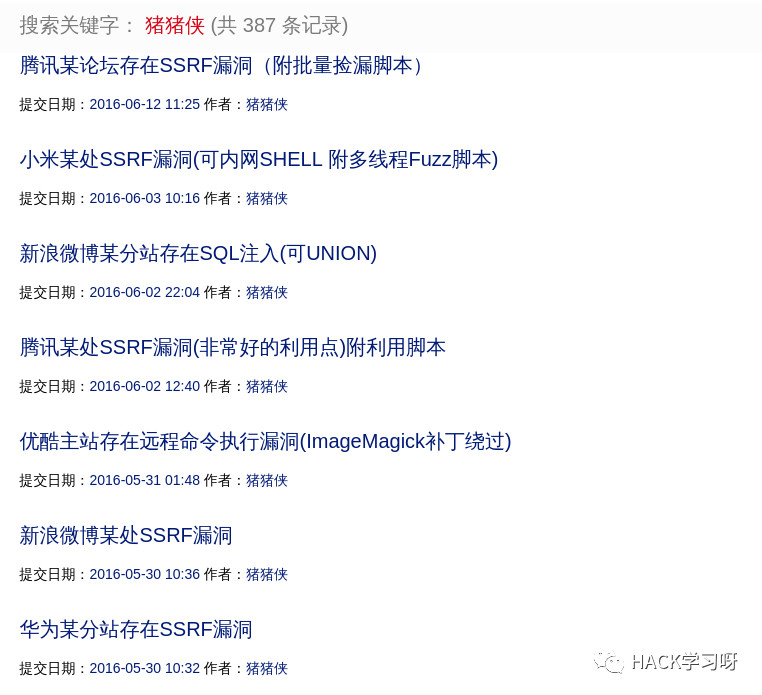

猪猪侠的黑客学习路线

猪猪侠是谁，我想说，他应该是我们这一代黑客都想成为的人

在“知乎”上，“如何黑掉知乎”的问题被提出后，他就跟帖贴出了密码库的连接密码和用户数据的信息结构。
360公司一份内部PPT显示，2008年前，安全公司普遍净利润低，而在BAT(百度、阿里巴巴、腾讯)等大公司里，安全部门又不是产生价值的部门，不受重视。
近年来，黑帽子地下产业链的兴旺，却在无形中抬高了白帽子的身价，这也成了很多黑客跻身白帽子群体的动力。一批拥有传奇故事的ID转换成实名，出走创业，或者被印在了各大网络公司的员工卡上。
“演讲之后，‘猪猪侠’的身价可能就要超过百万了”，乌云的一名骨干团队成员说。
当“猪猪侠”演讲完后，南方周末记者通过QQ向他提出采访要求。很快，他就用QQ传过来一份2013年的南方周末通讯录截屏，“你应该是入职还不到一年吧?去年的通讯录里没有你”。
这样的“炫技”对“猪猪侠”来说已经成了一种习惯。他曾在2013年先后四次尝试漫游腾讯内部网络最终成功，四次入侵的连载帖子被众多白帽子奉为“神作”。他的前辈、腾讯安全的资深黑客lake2也将与他交手的经历写成文章，作为对自己防御系统的检讨。
他在著名问答社区“知乎”上有另一个ID“王音”。在“如何黑掉知乎”的问题被提出后，他就在跟帖上贴出了密码库的连接密码和用户数据的信息结构。
“猪猪侠”的真实身份依然是个谜团。至少有包括腾讯安全部门的lake2在内的三名资深黑客认为，“猪猪侠”就是声名远扬但从不露面的传奇黑客“V”。

曾任阿里巴巴高级安全专家的黑客吴翰清2013年在一篇博文中写到一个名叫“V”的传奇黑客，积累了一个去重后有13亿条数据的数据库。“每条记录，都包含了用户名、密码、身份证号(社保ID)、手机号、邮箱、登录IP等信息，覆盖了半个互联网。”
“V”在入侵后也从不删除数据或进行破坏，也不会用入侵获得的成果牟利，“他至今仍恪守着古老的黑客守则，就如同中世纪的骑士们执著于骑士精神一般”。
“猪猪侠”的黑客生涯缘起于一次游戏道具的失窃。初一的时候，他在盛大传奇44区的一个35级魔法师号被盗。“刚打到一本魔法盾就被盗了，相当失落。”时隔十多年，他仍把这段经历看做自己的耻辱。
魔法盾是游戏中魔法师角色学习关键技能的必需道具。而当他去搜索引擎中查找相关资料时，“木马”两个字出现了。因为账号被盗而失落、无聊，从网游《传奇》中走出，“猪猪侠”走进了一个更大的游戏场。
叛逆、挑战、对“突破规则”的渴望，也几乎是所有黑客起步的机缘。如果不是为了绕过网吧的收费系统，为了破解父母设置在电脑上的密码偷玩游戏，或是为了获得少量的Q币，可能许许多多在互联网上提交漏洞的白帽子们，还不知此刻会在何方。
方小顿【wooyun创始人】说，“网络安全问题本身就存在于破坏规范中，处理网络安全问题的核心在于不守规矩。”这些知识不在传统的课堂上，相关专业也直至近年才出现。
白帽子的世界里，少有科班出身的“网络医生”，更多的是草莽出身的“屠狗者”，在网络世界闯荡江湖，获得各自的“魔杖”后，他们选择戴上了属于自己的白帽子。吴翰清对南方周末记者说，“以前在阿里巴巴，(安全方面)最核心的人，有一半就是没有本科学历的”。
像“猪猪侠”这样的白帽子，在乌云平台上注册的有6214名，活跃的超过1000名，足以组建好几家专注安全的互联网公司。其中20名核心白帽子的技术实力，可能令任何一家专业厂商都无法小觑。在不少互联网企业的招聘要求中，在乌云上提交过漏洞，甚至成为一个前置条件。
在拥有了诸多黑客高手之后，乌云也逐渐有了丰厚回报。整个乌云峰会期间，乌云管理团队成员杨蔚就不断地在接电话、回信息，其中不乏“众测”的业务电话。“众测”是一种由厂商提供产品，由乌云组织白帽子专门为其寻找安全漏洞的众包生产模式。
杨蔚没带名片。“我要是拿100张名片来，肯定早就发光了。现在众测排队已经排到了10月份，一个月可能有十几个项目，总金额也有五六十万元了。”他的语速极快。
发现漏洞本身也有了价格。很多网络公司、安防公司会发起悬赏，漏洞提交者可能得到不菲的现金奖励。有的漏洞帖子末尾，将会出现金灿灿的美元符号。在各大厂商每月的“土豪榜”里，依靠提交漏洞而获得数万收入者并不鲜见。
“猪猪侠”在乌云提交的许多漏洞描述中，都会有一句声明“未做深入研究”，意即为发现漏洞点到为止，但并未非法窃取数据。这也是大多白帽子在寻找漏洞时面临的边界。厂商在回复时，也常加上一句，“请各位白帽子在安全测试中注意遵守国家相关法律”。
众多白帽子都觊觎着“猪猪侠”多次祭出的大杀器——漏洞扫描器，希望能够公开放出。但猪猪侠看起来没有这样的打算。显而易见，保证自己都并非易事，他很难保证每一个得到“武器”的人，也“不做深入研究”。
吴翰清对南方周末记者表示，根据刑法新的修正案，未经授权入侵他人计算机的行为，都是非法的。乌云也在《信息安全相关保护与声明》中写道，“白帽子需要保证研究漏洞的方法、方式、工具及手段的合法性，乌云对此不承担任何法律责任”。
事实是，绝大多测试在没有授权的情况下进行。众多的白帽子，行走在无人把守的危险边界。
一位乌云白帽子谈到黑白帽子的界限时说，前期分析、获得漏洞的过程几乎没有区别，“白帽子会说自己是白帽子，黑帽子从不会说自己是黑帽子。大家只是最后的利用方式不一样。”
曾负责管理某公司邮箱系统的一位管理员在被报告漏洞后进行了系统修复，并向白帽子表示感谢。但他不太愿意和黑客们过多接触，不论黑帽子还是白帽子。他害怕自己的隐私会无所遁形。
“毕竟是富有攻击色彩的行业，(黑客)会让人不信任。”奇虎360公司的一位安全专家说。
发展初期的乌云，在企业眼中简直就是个黑客集中营，这样的不信任感如同坚冰。在企业眼里，提着自己的漏洞找上门来的，往往不是恶意竞争的同行，就是勒索要钱的黑客。一家大型国企曾要求乌云将自己的漏洞信息删除，遭拒后，封掉了乌云的流量，后经反复协调才重新开通。
事实上，白帽子和黑帽子的边界本来就是模糊的。据多名圈内人士印证，许多数据库的漏洞被放出来前，价值就已几乎被榨干。一些黑帽子先把黑钱挣了，再改头换面进入企业、白帽子团队或是加入乌云平台，都是“洗白”的路径。
大多互联网公司用人的一条原则是，决不录用有黑帽子经历的人。“曾经就有案例，一个知名社交网站录用了一个前‘黑帽子’，结果他在一个月内把系统摸清楚，最后把公司的数据库全拖了。”上述奇虎360公司的安全专家对南方周末记者说。
做过黑帽子的人几乎不可能再成为白帽子，除非你可以成功隐瞒你的过往——换个马甲，在网络世界里一切就可以重新来过。
“我们只能看他在乌云平台上做了什么，对于过往经历，我们没有能力，也没有义务去全部弄清。”方小顿的想法并不复杂，“让好人可以做好人，让坏人也想来做好人。”
他蓄着长发与短胡须，看上去更像一个艺术家。他的设想是，让白帽子们过上干净且自由的WOOHO(Wooyun Home Office)生活——不论你在哪，只要打开电脑，依靠自己的技术力量寻找漏洞、提交漏洞，就可以此为生，自在逍遥。
看上去很诱人。但事情的复杂性在于，整个网络世界都是灰色的，如果有区别，也只是灰度的不同。方小顿和他的伙伴们承认，在“帽子”们的江湖里，这一点也不例外。
黑客大战还会继续下去，黑客们黑白攻防的世界也远不像武侠小说中那么黑白分明，亦正亦邪，也都有自己的立场。
猪猪侠 乌云镜像漏洞案例： http://t.cn/RBp8DkF【看完案例后，你就知道猪哥有多牛逼了】

猪猪侠的微博：https://weibo.com/ringzero
HACK学习呀公众号后台回复：zzx
有一份猪猪侠推荐的学习路线
和推荐学习教程【不全】
点击阅读原文，有一篇来自知乎的零基础，如何成为一名黑客?
其实黑客的学习成长可以复制，前提是你有兴趣吗？你可以一直坚持下去吗？